MidScale project has an ambition to bring major changes to midPoint.
We wanted to make sure that the changes are well aligned with the needs of midPoint community.
Therefore we have conducted a survey about our plans in MidScale project.
This was an opportunity for midPoint community to express the opinions and thoughts, and influence the future of midPoint.
Although we received less responses that we have expected, the survey provided important insights.
We have received 34 complete survey results.
We greatly appreciate the effort of the people that took the time to fill out the survey.
That time is well spent, as your opinions will influence the future of midPoint.
Overall, the survey results seem to match with our existing plans.
However, there are few surprises.
Let's review the questions one by one.
Scalability, Performance and the Databases
The goal of midScale project is to increase the total number of identities that midPoint instance can handle.
We hope to be able to routinely support deployments with tens of millions of identities.
How do you feel about this plan?
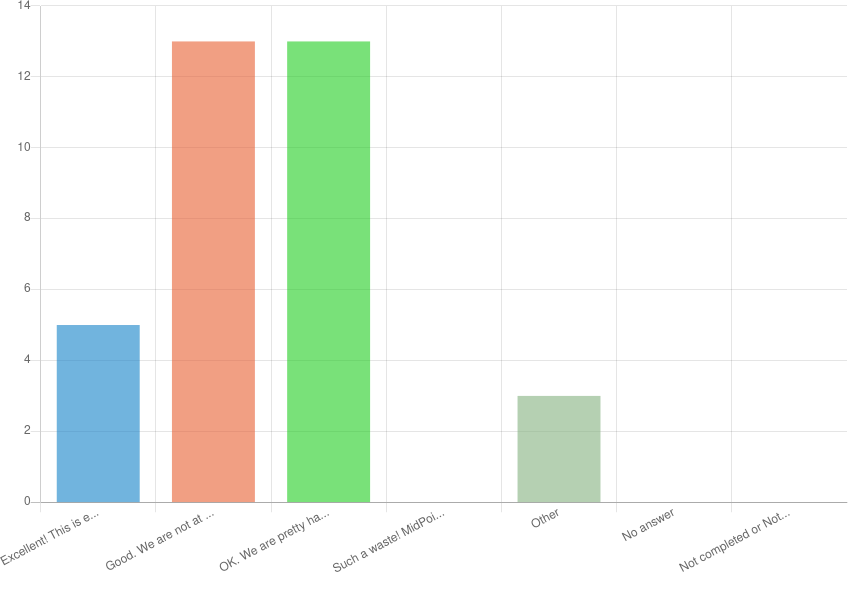
5
Excellent! This is
exactly what we have been
waiting for.
13
Good. We are not at that
scale yet, but we may
eventually get there.
13
OK. We are pretty happy
with midPoint as it is.
But we appreciate the
effort to make midPoint
better, especially if
midPoint will work a bit
faster for us.
0
Such a waste! MidPoint
scalability and
performance is good as it
is now. You should focus
your effort to other
areas.
Looks like midScale is addressing the needs of the community, even though these are future needs rather than current needs.
Which is good, as it will take some time for us to finish midScale.
Scalability and performance benefits of midScale will be available only for deployments that run on PostgreSQL database.
The reason is that we need to use database-specific features and "tune" the implementation for a specific database engine.
PostgreSQL will become primary midPoint database engine, strongly recommended for all midPoint deployments.
How do you feel about this?
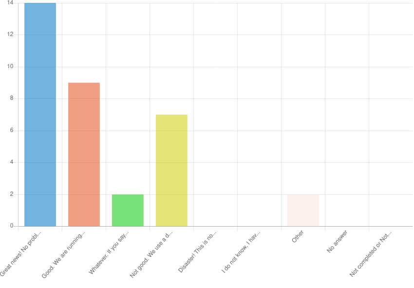
14
Great news! No problem
here, we are running on
PostgreSQL already.
9
Good. We are running a
different database now,
but this is worth
migrating to PostgreSQL.
2
Whatever. If you say
PostgreSQL, it will be
PostgreSQL. Any database
will do.
7
Not good. We use a
different database and we
like it. But if you say
we have to migrate then
we will do it,
eventually. But we will
complain all the time!
0
Disaster! This is not
going to work. We will
never migrate to
PostgreSQL, we will
rather drop midPoint.
0
I do not know, I have to
discuss this with my
colleagues.
We have expected that midPoint community is favorable towards PostgreSQL.
However, 74% of answers indicating to be OK with PostgreSQL is even higher than we expected.
This seem to validate our plan for PostgreSQL-based high-performance repository implementation.
MidPoint has support for other databases (MS SQL, Oracle, ...) and some of these databases will be supported in the future.
However, the code that supports these databases is database-agnostic, not optimized for any specific database engine.
Therefore the scalability will be limited, and the performance is likely to be worse than the performance of PostgreSQL implementation.
E.g. it is likely that such midPoint deployment may be able to handle maximum of 100,000 identities and peak loads will be limited to just a couple of requests/changes per second.
Would you still use it?
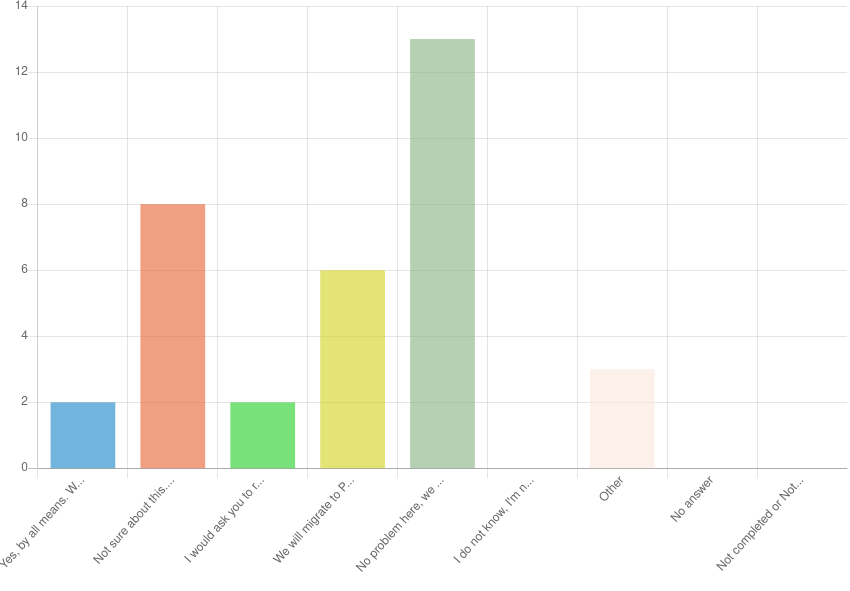
2
Yes, by all means. We
will keep our current
database. We would prefer
slow Oracle/MSSQL to a
quick PostgreSQL any day.
8
Not sure about this. We
would like to use our
current database, but we
will also consider
migrating to PostgreSQL.
2
I would ask you to
reconsider this decision.
We really need
high-performance midPoint
implementation that runs
on Oracle/MSSQL. There is
no way around it.
6
We will migrate to
PostgreSQL.
13
No problem here, we are
running on PostgreSQL
already.
0
I do not know, I'm not
the right person to
decide this.
The purpose of this question was to determine, whether it is worth to maintain the traditional generic repository implementation.
This is hard to call.
There are 4 votes to keep the "old" repository against 19 votes that do not need it any longer.
Yet, there are also 8 undecided votes.
Which makes this indecisive.
We do not want to abandon significant part of midPoint community, despite the majority of votes in favor of new repository.
It is quite clear that we cannot drop the "old" repository immediately.
And it was never the plan.
We will maintain both implementations in parallel, at least for some time.
This question cannot be clearly decided now, but we hope to get more insight in the future.
What database engine are you using now, or what database engine would you like to use with future midPoint deployments?
PostgreSQL is a clear winner here.
Again.
Which is not really surprising, especially given the fact that is was a recommended database for midPoint deployment for a couple of years.
The surprising fact is how dominant it is in midPoint community.
It has more than twice the votes as its closes competitor.
It it four times as popular as MySQL and MariaDB combined.
MidPoint support for MySQL and MariaDB was deprecated in midPoint 4.1.
MySQL/MariaDB are still supported, but the support will be removed eventually.
How do you feel about this decision?
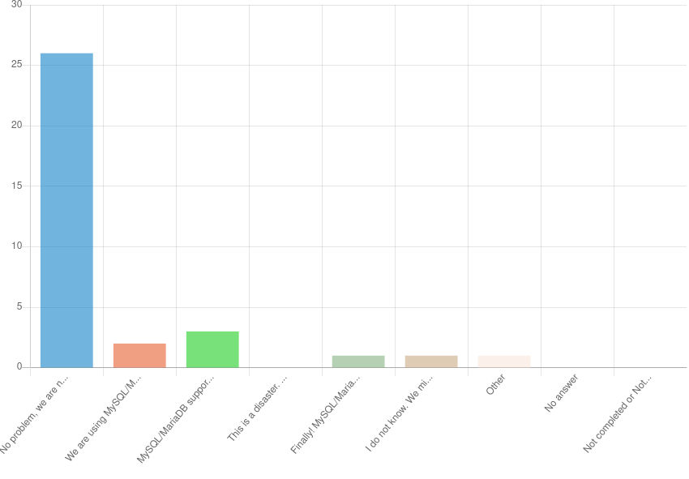
26
No problem, we are not
using MySQL/MariaDB
anyway.
2
We are using
MySQL/MariaDB, but we can
migrate to PostgreSQL
without any problems.
3
MySQL/MariaDB support
will be missed, but we'll
cope. We can migrate to
PostgreSQL eventually.
0
This is a disaster. We
won't be able to run
midPoint without
MySQL/MariaDB support.
1
Finally! MySQL/MariaDB
are not worth supporting,
you should not waste your
time on them.
1
I do not know. We might
be using MySQL/MariaDB,
I'm just not the right
person to answer this.
We have deprecated MySQL and MariaDB support a couple of years ago.
This question was supposed to give us some guideline regarding the timeline of removing the support.
The answers could hardly by any clearer.
Almost all of the answers indicated that removing MySQL/MariaDB is not going to be a big problem, nobody indicating it as an showstopper.
The next logical step would be to drop MySQL/MariaDB support soon.
We are contemplating our database support strategy for the future.
We wonder whether there is significant mass to support Oracle/MSSQL or any other database.
How would you feel if PostgreSQL becomes the only supported database in 5-8 year time frame?
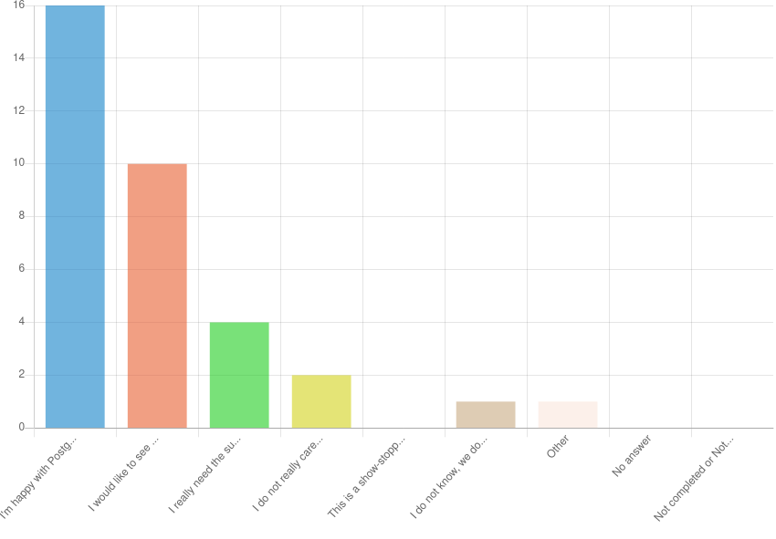
16
I'm happy with
PostgreSQL, thank you
very much.
10
I would like to see my
database
(Oracle/MSQL/other)
supported, but we can use
PostgreSQL if it is not.
4
I really need the support
for my database in the
future. It will be huge
problem to migrate to
PostgreSQL.
2
I do not really care as
long as the database
comes with midPoint. E.g.
if midPoint comes in a
form of a stand-alone
image (e.g. docker
compose), then I will use
whatever database there
is, as long as I do not
have to manage it
directly.
0
This is a show-stopper. I
will have to drop
midPoint if my database
is not supported any
more.
1
I do not know, we do not
see that far into the
future.
This is slightly less clear than the previous question.
Majority of responses are OK with PostgreSQL-only midPoint.
Yet, 10 people would like to stay with their current database, there are still 4 responses that are not in favor at all.
Although nobody indicated this as a show-stopper, this is still something for us to consider.
Auditing
MidPoint is auditing all the changes in identities, configuration, everything.
Does that work for you?
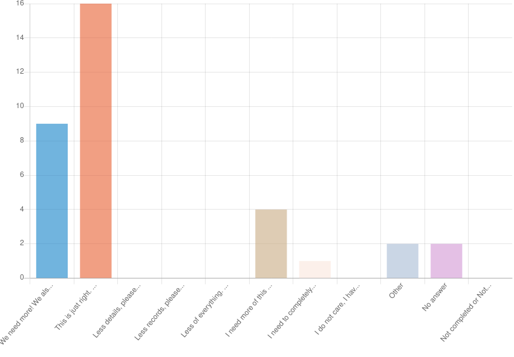
9
We need more! We also
need to audit access to
data (read). We need to
record every operation.
16
This is just right. It
works for us well.
0
Less details, please. We
need to audit all the
operations as they are
audited now, we just do
not need all the details.
E.g. we do not need to
see what attributes were
changed.
0
Less records, please. We
need detailed audit
records, but we want to
audit just some sensitive
operations.
0
Less of everything. Audit
log is too detailed in
all aspects. We need
something much simpler.
4
I need more of this and
less of that. Please
create some configuration
for me to tune auditing
details.
1
I need to completely
customize the auditing,
please let me create my
own auditing plug-in. I
can do the coding.
0
I do not care, I have no
use for audit data.
Designing auditing subsystem may seem like a simple job, but it is not.
There are many choices to make, considering performance, storage capacity, maintainability, evolution of data formats and various other concerns.
Yet, it looks like we have done quite a good job designing our auditing facility, as it looks just right for roughly half of the respondents.
Significant part of the responses indicate a need for finer auditing, which is something we have to consider in the future.
There were voices asking for more configurability in auditing, which we will definitely listen to.
At least one thing is clear: nobody wants less data in their audit trails.
How do you plan to use audit records?
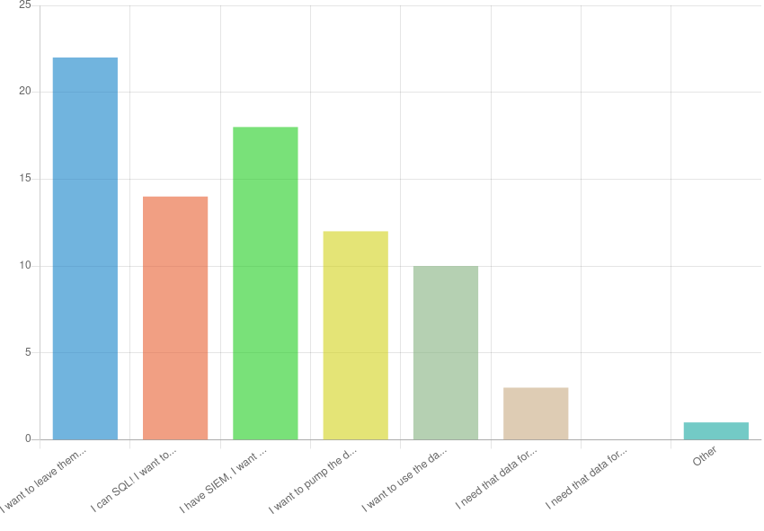
22
I want to leave them in
midPoint database, access
them using midPoint user
interface.
14
I can SQL! I want to
access audit records
directly in the database
table, using database or
data analytic tools.
18
I have SIEM, I want to
pump audit records to my
SIEM system.
12
I want to pump the data
to a data warehouse for a
long-term archival.
10
I want to use the data in
a visualization tool. I
want to see the charts!
3
I need that data for
forensic analysis and I
have my own tool to do
it.
0
I need that data for
forensic analysis and I
expect midPoint to it. I
have money to pay for
this.
When we originally designed the audit subsystem, we have expected that the data will not stay in midPoint database for long.
We have expected that they will be pumped to other systems such as warehouses, SIEMs and so on.
But it looked like this is not happening.
We have seem people keeping the data in midPoint database, which was never designed to be keep long-term historical data.
The answers to this question provides a very important insight for us.
As we have suspected, most people would like to keep audit data in midPoint database.
Which means that we will need to take long-term data storage into our considerations.
However, the number of responses indicating integration with SIEM, data warehouses and even forensic tools is surprisingly high, considering relatively low interest about such topics in the past.
This is certainly something we will need to consider in our plans.
How long do you want to store audit data in midPoint database?
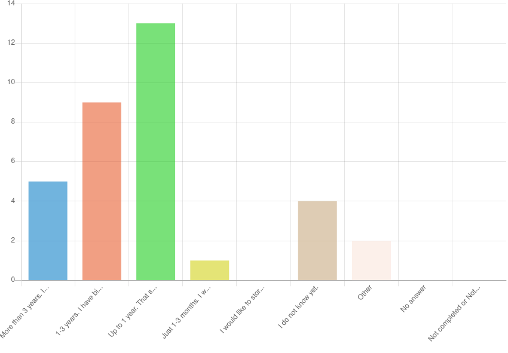
5
More than 3 years. I have
massive database that can
handle that.
9
1-3 years. I have big
database prepared for
that.
13
Up to 1 year. That seems
to be reasonable
compromise.
1
Just 1-3 months. I will
be quickly
pumping/archiving/deleting
the data.
0
I would like to store the
data for a long time, but
I do not have terabytes
of database space. Can
you do some magic to make
this possible? I have
money to pay for the
solution.
Answers to this question confirm our suspicion.
You would like to store audit data in midPoint database for longer that we have originally expected.
Most people want to to store the data for a year or just few years, however there was at least one answer indicating as long as 10 years of data retention.
This is yet another indication that we need to improve mid-term to long-term storage of midPoint audit data.
Luckily, nobody expects us to do any black magic here.
We really appreciate that midPoint has such a pragmatic community.
Platforms
MidPoint has been supported on both UNIX/Linux and Windows platform.
However, we are wondering how many Windows deployments are there.
How do you feel about Windows support?
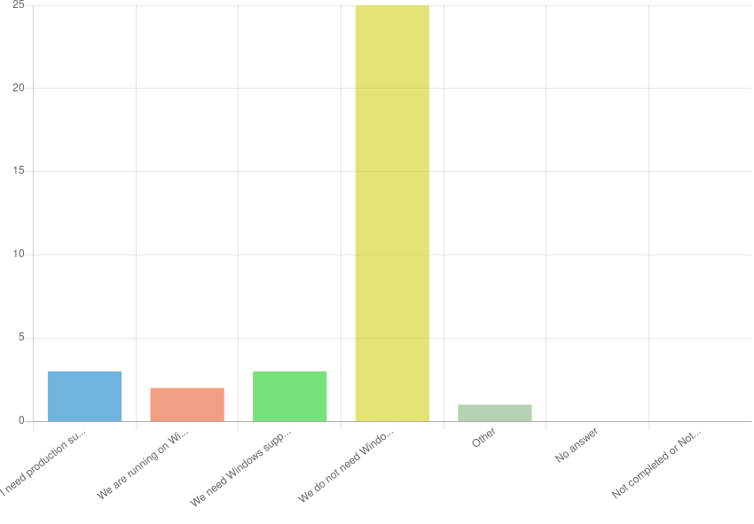
3
I need production support
for Windows Server. There
is no other way.
2
We are running on
Windows, but there is no
problem to migrate
production environment to
Linux if needed.
3
We need Windows support
only for development,
demo, prototyping and
similar purposes. We do
not need production
support.
25
We do not need Windows
support at all.
It does not look very favorable for Windows, does it?
Only 3 votes for Windows, against 28 votes that do not mind dropping Windows support.
This does not look well for the future of Windows platform support.
Of course, midPoint will still be running on Windows.
Even some of our own developers use Windows on their machines (although they are a minority).
However, we will consider the future of production-level support for Windows.
One of the respondents asked why we would even consider dropping Windows support.
The answer is simple: to reduce support overhead.
If we include Windows platform in our support, we also have to test midPoint on Windows platform, create and maintain start/stop scripts, consider Windows platform in midPoint documentation and so on.
Most of these are small tasks that are done quickly.
But there are many of them, we need to keep them in mind, they are a distraction.
And then there are exotic issues, such as bugs related to filesystem paths (/ versus \ and C:), obscure platform-dependent Java virtual machine crashes, clustering-related issues and so on.
Some of them may be tricky to resolve, it may need a lot of time.
This is increasing cost of midPoint support for everybody.
We are professionals, and we are more than willing to do all these things as long as there is sufficient demand to justify the costs.
Yet, the answers from the survey seems to suggest that the demand for Windows platform support is very low.
It looks we have to make decision here.
MidPoint runs on Java platform.
Java platform has changed its support model a couple of years ago.
There is an long-term support (LTS) version of Java platform released every three years.
Latest Java LTS release is Java 11, released in 2018. The next LTS release will be Java 17, planned for September 2021.
We usually want to run midPoint on the latest Java LTS version.
How do you feel about it?
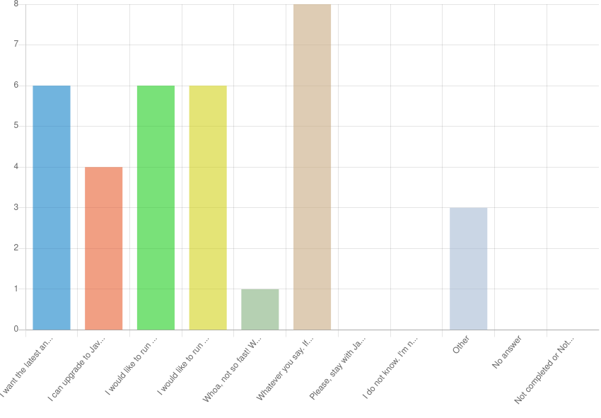
6
I want the latest and the
greatest! Please support
new Java versions as soon
as you can. I can upgrade
my Java platform any time
to any version.
4
I can upgrade to Java 17
very quickly after the
release (e.g. 1 month). I
will be happy to run on
Java 17 as soon as
possible.
6
I would like to run on
Java 17, but we need a
bit more time. I need
approx. 6 months to
adapt.
6
I would like to run on
Java 17, but we need
quite some time. I need
up to a year to adapt.
1
Whoa, not so fast! We
have barely upgraded to
Java 11. It will take a
year or two until we can
switch again.
8
Whatever you say. If you
say I need Java 17, I
will be running Java 17.
0
Please, stay with Java 11
for as long as you can
(forever). We are scared
of Java platform
upgrades.
0
I do not know. I'm not
the right person to talk
about this.
It looks like midPoint community is very progressive when it comes to new Java versions.
Almost all of you can migrate to new Java version up to a year after it is released.
This gives us hope for quick migration to Java 17.
This is also an indication for us that we can move ahead to new Java versions quickly after their release.
This is a very pleasant surprise, as Java platform upgrades used to be a problem in the past.
Let us take these answer as an indication that this problem is gone now.
How would you like to deploy midPoint?
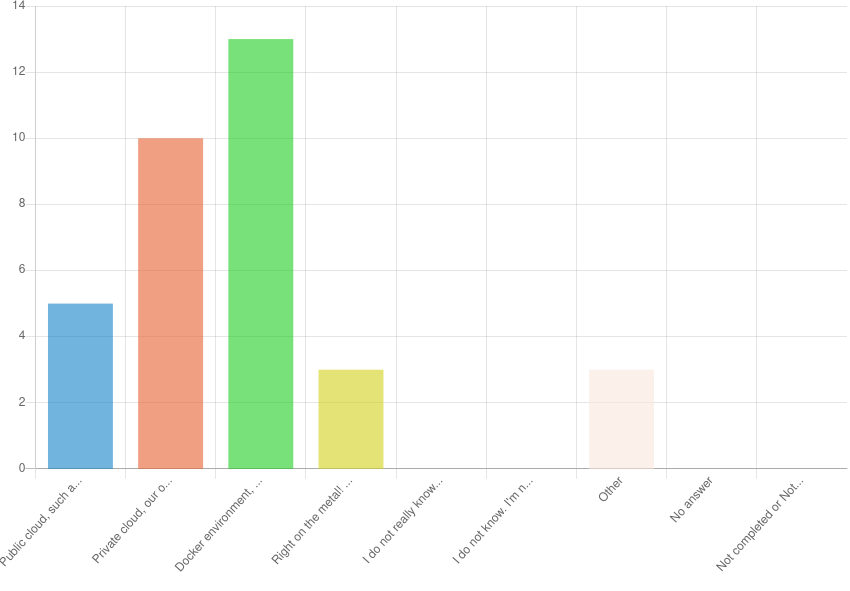
5
Public cloud, such as
Amazon AWS.
10
Private cloud, our
organization is running
the hardware.
13
Docker environment, or
similar container
technology.
3
Right on the metal! We
are traditionalists.
0
I do not really know.
They just gave me the
access and I have
deployed it.
0
I do not know. I'm not
the right person to
answer this.
Looks like Docker is really popular these days.
We like Docker too, and we plan to move in that direction.
The use of public/private cloud is really interesting.
These are important data for our planning.
How dynamic do you want your midPoint deployment to be?
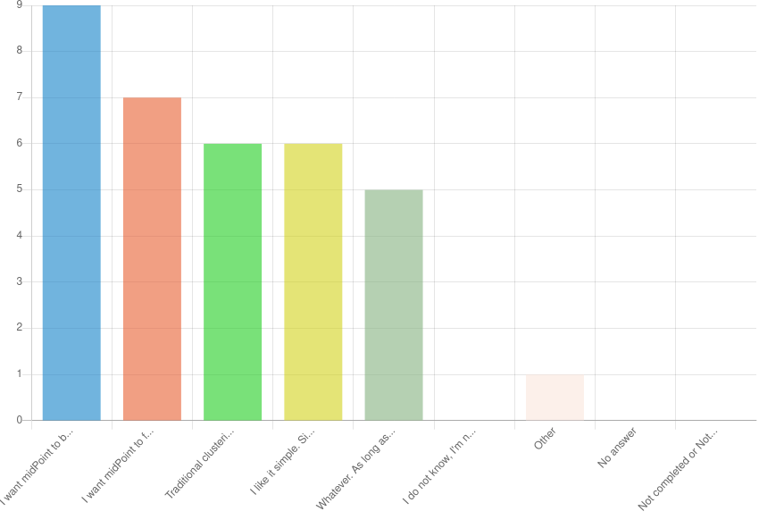
9
I want midPoint to be
fully cloud-native. I
want to use cloud
database, adding and
removing nodes as needed
(autoscaling) and all the
other cloudy goodies.
7
I want midPoint to feel
quite comfortable in the
cloud. I want dynamic
autoscaling for midPoint
nodes, but I'm happy with
static database instance.
6
Traditional clustering
for me, please. I want a
handful of midPoint
nodes, storing data in a
centralized database
engine.
6
I like it simple. Single
machine, one midPoint,
simple database - that is
all I need.
5
Whatever. As long as you
provide reasonable
performance and
high-availability (HA), I
do not care how you do
it.
0
I do not know, I'm not
the right person to
answer this.
The community seems to be divided to two almost equal groups here.
We have 16 votes for cloud, 12 votes for more traditional approaches.
It looks like we will need to support both.
MidPoint has a good foundation in the traditional approach, and we plan to support these for any foreseeable future.
However, it looks like we will have to invest more in the "cloudy" improvements in the future, to satisfy the desire for dynamic environments.
We are thinking about new midPoint deployment model, packaging all the necessary components in one bundle.
MidPoint, database, web server all bits and pieces neatly packaged together.
We are thinking about using Docker compose or a similar technology.
What do you think?
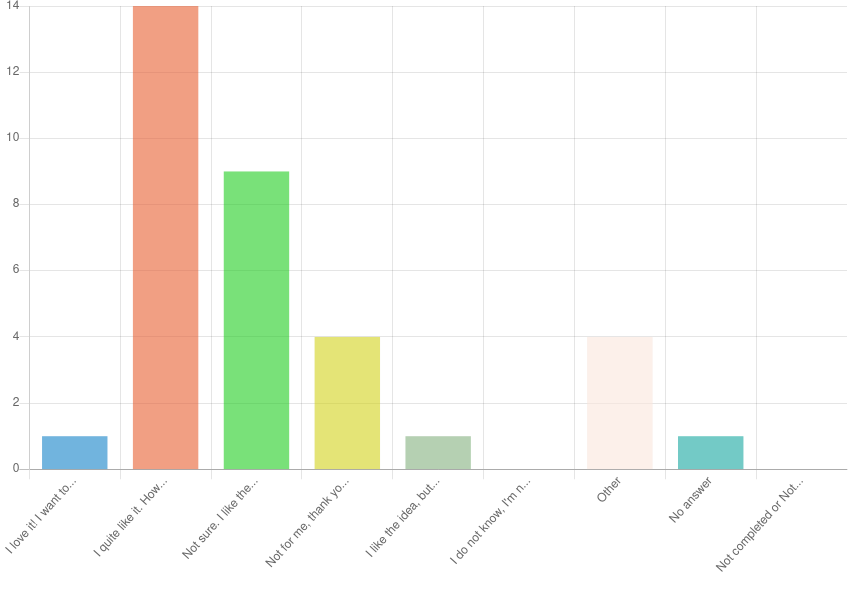
1
I love it! I want to have
midPoint running in
seconds. I do not care
what is inside, as long
as it works.
14
I quite like it. However,
I would like to have some
control over it. I want
to adjust some deployment
and configuration
parameters.
9
Not sure. I like the
overall idea, but I want
to have some choice and
control over the
components. E.g. I want
to select the database
engine.
4
Not for me, thank you
very much. I want to be
in control. I want to
deploy everything myself.
1
I like the idea, but
could you use something
else than Docker?
0
I do not know, I'm not
the right person to
answer this.
Obviously, this question was about Docker, stand-alone Spring Boot application, and similar approaches.
It looks like the community has a favorable opinion, as long as a reasonable amount of control over the environment is maintained.
We understand, that the flexibility of midPoint is a very important aspect, and that reasonable amount of control over midPoint deployment will always be necessary.
On the other hand, we also see value in simplification, and unification of the deployments.
Only a small portion of community seems to keep everything under their control.
This is a very important input for our decision making.
How much availability do you need?
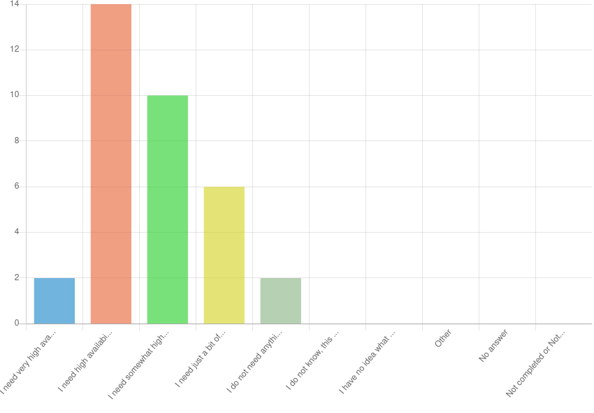
2
I need very high
availability, at least
99.999%. I need redundancy
in every component,
access, compute nodes,
database, everything. My
deployment needs to
survive even a mid-size
thermonuclear exchange.
14
I need high availability,
somewhere around 99.99%,
99.9% at the worst. I
need redundancy in
critical components,
especially compute nodes
and database. The
database may be
active-passive or
hot/cold standby, it may
take some time to
recover, but the recovery
has to be automatic.
10
I need somewhat high
availability, 99.9% or
even slightly less than
that. We need redundant
compute nodes, but we can
live with non-redundant
database. We can recover
the database using
platform tools (such as
virtual machine
snapshots) if needed.
6
I need just a bit of
availability, around 99%.
I can do that with
virtual machine images
and similar tools. I do
not need any special
features in midPoint.
2
I do not need anything
special. I prefer simple
deployments. One midPoint
node and one database is
all I need. Thank you
very much.
0
I do not know, this has
not been decided yet.
0
I have no idea what all
those numbers and words
mean, I'm not that kind
of an engineer.
It looks like majority will be fine somewhere around three nines (99.9%) availability, or slightly more than that.
The opinion seems to be leaning towards fully-automatic recovery, which is perfectly understandable.
Evolveum Services
How do you like midPoint?
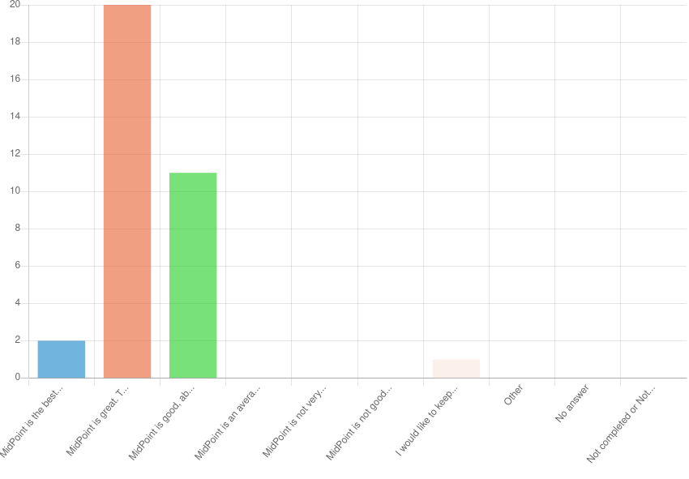
2
MidPoint is the best
product ever. I'm really
impressed!
20
MidPoint is great. There
is a thing or two that we
would like to see
improved, but midPoint
works well for us.
11
MidPoint is good, above
average. Yet, it will
certainly benefit from
some improvements.
0
MidPoint is an average
software. Neither better
nor worse than other
products in this
category.
0
MidPoint is not very
good. It has some
potential, but you need
to work much harder to
make it happen.
0
MidPoint is not good at
all. It won't work us.
1
I would like to keep my
opinion to myself.
Thank you so much!
You seem to like midPoint, which makes us very happy indeed.
We consider ourself lucky to cooperate with such an amazing community.
We will do our best to keep up the good work.
How do you like Evolveum services? (Services such as support, subscription, trainings, consulting and so on.)
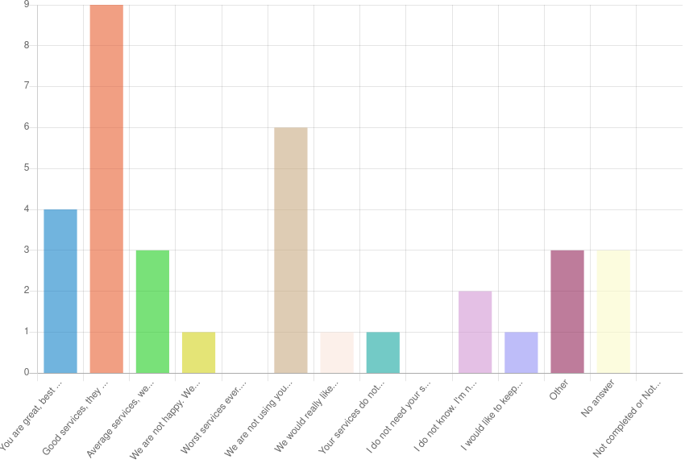
4
You are great, best
services ever. Keep up
doing good work!
9
Good services, they are
worth every cent.
3
Average services, well on
industry standard.
1
We are not happy. We will
give you one more chance,
but you need to work much
harder.
0
Worst services ever. I
want my money back!
6
We are not using your
services yet. But we may
use them in the future.
1
We would really like to
use your services, but we
cannot afford them.
1
Your services do not
match our needs. We need
something different.
0
I do not need your
services, I can do it
myself.
2
I do not know. I'm not
the right person to
answer this.
1
I would like to keep my
opinion to myself.
Thank you for trusting us and purchasing our services!
We are happy you understand the importance of having active support and its value proposition.
Thanks to your purchases, we receive budget to dedicate development team to maintain and develop midPoint, and help you with your product issues.
Since midPoint 4.0, we have changed midPoint support lifetime policy.
Now we have long-term support (LTS) releases with a three-year support lifetime and feature releases with one-year support lifetime.
How do you like this approach?
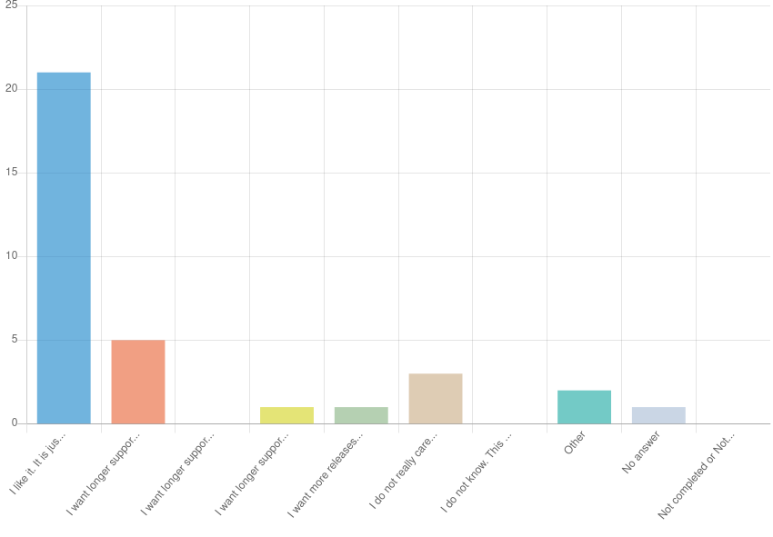
21
I like it. It is just
right. It works for us
well.
5
I want longer support. I
would like the releases
to be supported for
longer time, even if
there is only one release
each year.
0
I want longer support,
and I have money to pay.
I can pay premium to
extend the support
interval.
1
I want longer support,
but I'm not going to pay
a single cent. I'm paying
enough already.
1
I want more releases. I
would like to see three
or four releases each
year, even if that means
shorter support lifetime.
3
I do not really care. We
will adapt to any support
lifetime as needed.
0
I do not know. This is
all too confusing.
The LTS program seems to work fine overall.
There seems to be some sentiment towards longer support.
Which may be something to consider.
However, longer support lifetime has its cost in money, time and developer capacity.
These are very sensitive decisions to make.
Fortunately, thank to you, now we have the data to base our decisions on.
What releases do you usually use in production, or what releases are you planning to use?
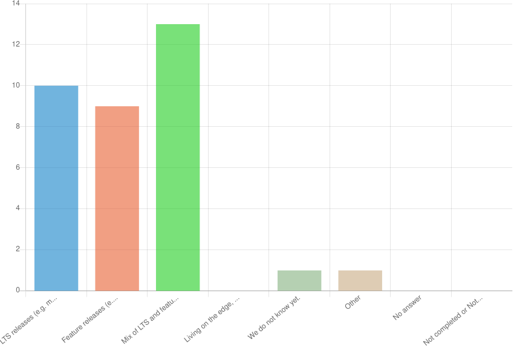
10
LTS releases (e.g.
midPoint 4.0 LTS,
planning to upgrade to
midPoint 4.4 LTS)
9
Feature releases (e.g.
midPoint 4.1, midPoint
4.2, planing to upgrade
to midPoint 4.3)
13
Mix of LTS and feature
releases, as needed.
0
Living on the edge, we
are running on
development master
branch!
It looks like both LTS and feature releases are used in approximately equal proportions.
We take it as a sign that the LTS/feature support model works well, both kinds of releases have their place and purpose.
Are you active midPoint subscriber?
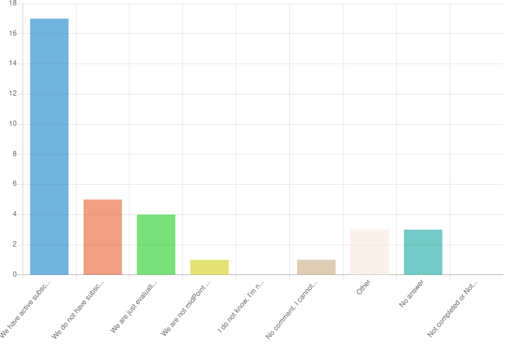
17
We have active
subscription.
5
We do not have
subscription yet, but we
plan to acquire
subscription soon.
4
We are just evaluating
midPoint, nothing is
decided yet.
1
We are not midPoint
subscriber and we do not
plan to purchase
subscription.
0
I do not know, I'm not
the right person to
answer this.
1
No comment. I cannot
disclose this
information.
The results show half of you are active subscribers of our services and some are planning to acquire subscription soon or are in the process of evaluating midPoint.
Thank you for participating this way on midPoint’s present state-of-the-art status.
We would be happy for newcomers who would help us to enhance midPoint’s future.
We really appreciate it.
If you catch a golden fish that grants wishes, what would you wish us to do?
You could have one wish, you could wish for improvement in midPoint, new feature, change in Evolveum services or policies, what would that wish be?
Reviewing answers to this question was like walking a Garden of Eden.
There were far-reaching wishes, such as AI.
However, most wishes were very pragmatic and practical.
System stability, especially in multi-threaded operations was mentioned several times.
As was the DB schema and performance.
Which is a good match, as that is in the scope of midScale project already.
Improvement in documentation was mentioned many times.
We are aware of this problem, and we are working on a solution.
Your wishes are certainly helpful, they will give us data to correctly prioritize documentation work.
However, midPoint is also quite big and comprehensive system.
It is easy to document small and simple systems, but documentation of a comprehensive and very flexible system such as midPoint is quite a challenge.
Wishes for simplifications and user experience improvements were also mentioned several times.
We are certainly considering these, and we know that there are some important improvements that we have to make in this area.
Unfortunately, there is only a finite amount of work that can fit into any particular release.
There were also other wishes and suggestions.
All the suggestions are important to us, and we will consider each one of them.
This is important information that will help us decided on midPoint roadmap.
Tell Us About Yourself
How would you characterize yourself?
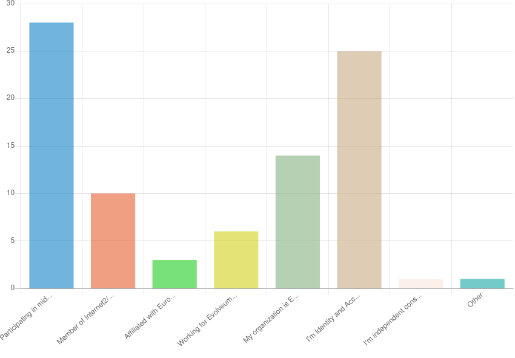
28
Participating in midPoint
community (e.g. member of
midPoint mailing list)
10
Member of
Internet2/InCommon
community
3
Affiliated with European
academia (education and
research)
6
Working for Evolveum
partner
14
My organization is
Evolveum customer
25
I'm Identity and Access
Management (IAM)
specialist
1
I'm independent
consultant or freelancer
We see our survey got into the right hands. Nearly all of you are members of our valuable community and many are IAM specialists.
We are happy about a considerable amount of Internet2/InCommon people sharing their ideas and this way influencing the future of midPoint.
What describes your organization the best?
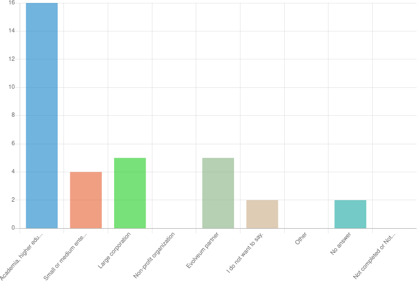
16
Academia, higher
education and research
4
Small or medium
enterprise (SME)
0
Non-profit organization
We are happy that people from academia, higher education and research found time to participate in this survey.
Based on this information we are able to make decisions how to be helpful for your vertical even more.
We believe we have been improving midPoint in important way for organizations outside this vertical as well and we would get more feedback from them in the future survey.
In addition, we see interest in midPoint by large organizations.
Based on that, we find our decision to focus on midScale within 4.3 and 4.4 releases to be the right choice.
Once midScale is finalised and the community including large organizations would see outcomes of our hard work, we believe there will be survey feedback from them as well to help us with making right decisions.
Conclusion
There was praise of midPoint and Evolveum team in the comments, and we are very thankful about these.
The work is easier when we know that it helps other people to do their jobs.
There were many suggestions and remarks.
We appreciate all of them.
These are important data to make decisions about midPoint future.
We would like to thank all of you that participated in the survey and helped to shape the future of midPoint.